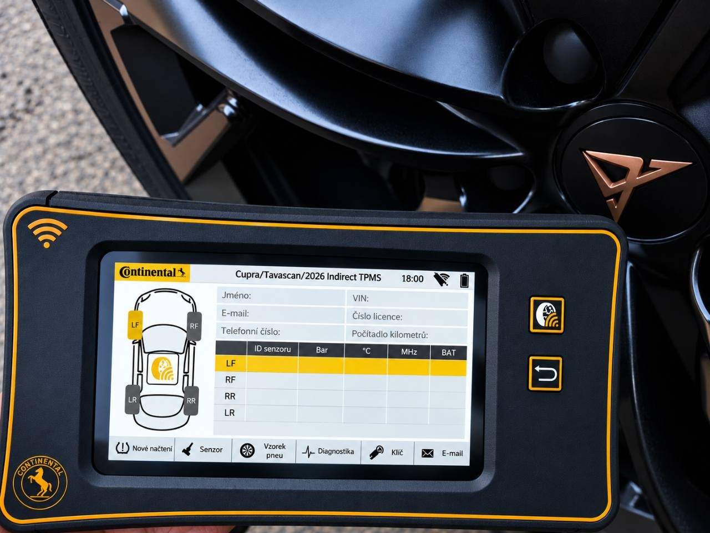

Changing and selling tyres for your car

Tyre fitting workshop at J&S SERVIS.
J&S servis in Statenice offers a technologically advanced tyre service focused on gentle tyre fitting, accurate wheel balancing, diagnosis of their irregularities and TPMS system checks. We use specialised equipment for passenger, sports and performance cars.
- Robotic tyre fitting with VAS 6616
- Beissbarth MT ZERO 8 diagnostic balancing
- Continental TPMS diagnostics and wheel washing
Robotic tyre fitting – VAS 6616
The professional VAS 6616 (monty quadriga) automatic tyre changer uses laser scanning of the rim contour and automatically controlled fitting tools. It enables careful tyre fitting and removal while minimising the risk of damage to wheel rims and tyre beads.
The technology is also suitable for demanding low-profile UHP tyres and run-flat tyres.
Diagnostic Balancing - Beissbarth MT ZERO 8
A modern diagnostic balancer enables accurate wheel balancing and checking of geometric irregularities of tyres and rims according to the available functions of the device.
It helps in identifying the causes of vibrations that may persist even after routine balancing.
The procedure may include optimising the relative position of tyre and rim to reduce overall wheel runout.
Locking wheel bolt key sets for VW Group vehicles
Locking wheel bolts: correct handling
Locking wheel bolts must be loosened with hand tools and tightened with a torque wrench to the torque specified by the manufacturer for the particular vehicle, wheels and bolts fitted.
For both operations, the matching locking wheel bolt key – the adapter – must be correctly and fully engaged. Do not use an impact wrench during routine wheel changes: it can damage the engagement profile of the bolt or key and make subsequent wheel removal difficult.
The locking wheel bolt key belongs in the vehicle
Regularly check that the correct, undamaged locking wheel bolt key is in your vehicle. Keep it in a consistent, easily accessible place with the vehicle tool kit.
After a tyre change or other work on the wheels, the workshop must return the key to the customer. Always check that it has been returned when collecting your vehicle. A missing or damaged key can prevent a routine wheel change after a puncture and seriously complicate roadside assistance.
Remember the spare wheel
If your vehicle has a spare or temporary spare wheel, check its condition and tyre pressure regularly, especially before a long journey. Follow the values and restrictions specified by the vehicle and temporary spare wheel manufacturer. Also check that the required tools, including the locking wheel bolt key, are present.

Check wheel bolt tightness after approximately 50 km
After a tyre or wheel change, we recommend having the tightness of all wheel bolts checked by a workshop after approximately 50 km. Any different instructions from the vehicle, wheel or locking wheel bolt manufacturer take precedence.
The check is performed with a torque wrench; any retightening must be to the specified torque only. The aim is correct wheel fastening, not additional tightening with greater force.
Should wheel bolts be lubricated?
Water, road salt and corrosion can make wheel bolts harder to loosen later. Their treatment is nevertheless governed by the manufacturer’s fitting instructions.
Lubrication changes friction in a bolted joint. At the same tightening torque, a lubricated bolt can develop higher preload and greater clamping force. Inappropriate use of lubricant can therefore overload the bolt, the thread in the hub and the wheel rim’s bolt seating surface.
If the manufacturer specifies fitting without lubrication, the relevant threads and seating surfaces must be clean and free of oil or grease. An assembly product may be used only where expressly specified, with its type, application area and tightening method defined. Tightening torque must never be adjusted by guesswork.
Damaged or heavily corroded bolts must be replaced. Merely setting the specified value on a torque wrench does not ensure correct preload if the condition of the joint does not meet the fitting instructions.
TPMS / RKA / RDK diagnostics – Continental
At J&S SERVIS, we carry out diagnostics of tyre pressure monitoring systems of Volkswagen Group vehicles. We use professional Continental equipment and ODIS diagnostics.
Direct RDK systems use electronic sensors in each wheel. We check their operation, communication and system status. Depending on the vehicle, we also programme compatible replacement sensors and assign them to the vehicle.
Indirect RKA and RKA+ systems evaluate changes in wheel behavior using ABS/ESC data. We carry out fault diagnosis and the necessary initialization according to the manufacturer's procedure.
When changing tyres or complete wheels, we check system operation as required and investigate any fault messages. The work always reflects the vehicle and its equipment.

Professional machine washing of wheels - Wulkan
The specialised Wulkan washer enables thorough cleaning of rims and tyres before diagnostic balancing.
The removal of impurities contributes to the reliability of the measurement and the quality of the resulting balance.
Caring for sports and performance cars
Our technological equipment enables professional and careful work even with demanding wheels of sports and performance vehicles, for example Porsche, Audi RS and other premium cars, within the technical parameters of the equipment.
We provide tyre service for vehicles Volkswagen, Audi, Škoda, SEAT, CUPRA, Porsche and other brands.
Complete tyre service with a transparent price
The price of a standard complete four-wheel tyre change includes removal and refitting of the wheels to the vehicle, tyre fitting, standard balancing including the used balance weight and machine washing of the wheels.
Extended runout diagnostics, wheel optimization, TPMS sensor programming and other above-standard operations are billed separately according to the scope of the work performed.
Sale of tyres for cars and commercial vehicles
After ordering by phone, we are able to provide tyres of various types and brands as needed. We will then fit the tyres and balance the wheels at our workshop.
Before booking
When booking, state the wheel size, whether you are bringing complete wheel-and-tyre assemblies or tyres to be fitted to rims, and any TPMS warning. For a change of complete wheels only, confirm the relevant scope and price; the tyre-fitting price list covers a different set of operations.